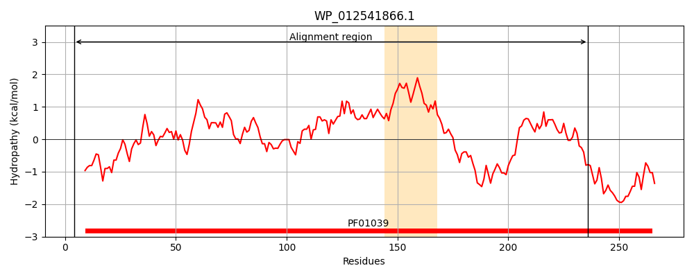
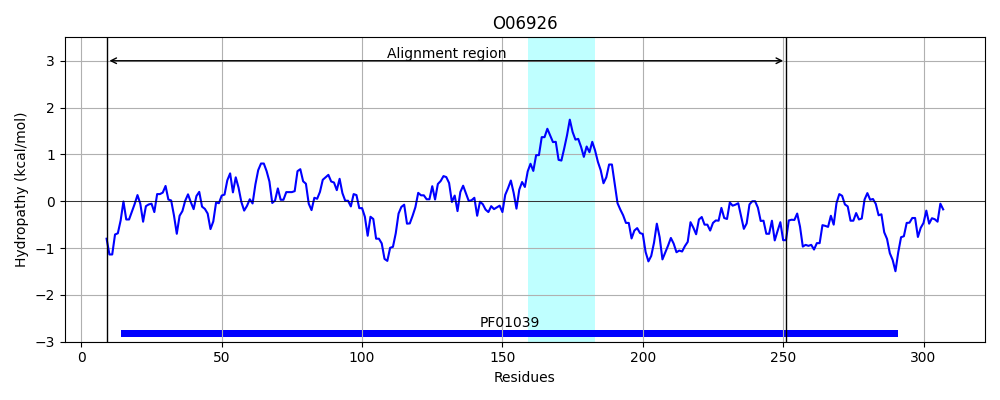
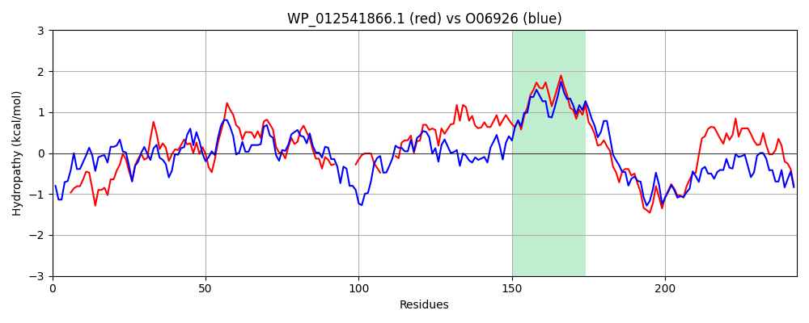

Hit Accession: O06926
Hit TCID: 3.B.1.1.4
Hit Description: gnl|BL_ORD_ID|6770 gnl|TC-DB|O06926|3.B.1.1.4 PUTATIVE SUBUNIT OF MALONYL-S-ACYL CARRIER PROTEIN - Malonomonas rubra.
Mach Len: 243
e:0.000000
Query TMS Count : 1
Hit TMS Count: 1
TMS-Overlap Score: 0.750000
Predicted Substrates:CHEBI:9175;sodium(1+)
BLAST Alignment:
Score: 444 , Bit scores: 175 bits, E-value: 2.4e-53, Alignment length: 243, Percentage identity: 40
Query: 4 DRSFIELRARERAHALLDDGSYRELLDPFEGIMSPWLGAQGIVPQSDDGMVVAKGTINGQPAVVIAIEGTFQGGSMGEVSGAKMAAALELAAE------DNRNGIPTQ----AVLCLETGGVRLQEANLGLAAIADIHAAIVDLRRYTPVVGIITGTVGCFGGMSIAAALCSYLIVTREARLGLNGPQVIEQEAGIEEYDSRNRPFIWSMTGGEIRAASGLVDALVNDGVNAVKTAMNEAIAK 236
D+SF+E ARERA ++D+G++ E PF+ I SP L G + DDG+V G I +P VI+ EG F GGS+GEVSGAKM ++LA++ + +P + V+ ETGGVRL EAN GL A A++ I + R P++ +I VGCFGGM AA +I+++ RLGL GP+VIEQE G +E+D+ +R ++ TGG+ + G + L D + + + + K
Sbjct: 9 DKSFLEATARERAVGIVDEGTFTEFCGPFDKIYSPHLPLMGEAIEYDDGLVAGVGKIGKKPIFVISQEGRFIGGSIGEVSGAKMVKTIQLASDLYEEMVSEKPDLPEEMRPAVVISFETGGVRLHEANAGLLAHAEVMDQIQNCRGRVPIISLIGSRVGCFGGMGFVAAATDVIIMSQFGRLGLTGPEVIEQEMGKDEFDASDRALVYRTTGGKHKYIIGDCNYLAADSIRSFRETTTAVLQK 251 | Protein Hydropathy Plots: |
|---|
|  |  |
Pairwise Alignment-Hydropathy Plot:
|
|---|
|  |